AE 417 · Aerospace Structures and Instrumentation Laboratory · Fall 2025 · ERAU
Aluminum honeycomb core is one of the most weight-efficient structural materials in aerospace. It fills the interior of aircraft floor panels, fairings, and control surfaces, absorbing crash energy and carrying compressive loads at a fraction of the weight of solid metal. This lab tested an aluminum honeycomb specimen in out-of-plane compression per ASTM D 7336/D 7336M-07, characterizing its three-stage crushing behavior and comparing results against manufacturer specifications for the 5056 alloy series.
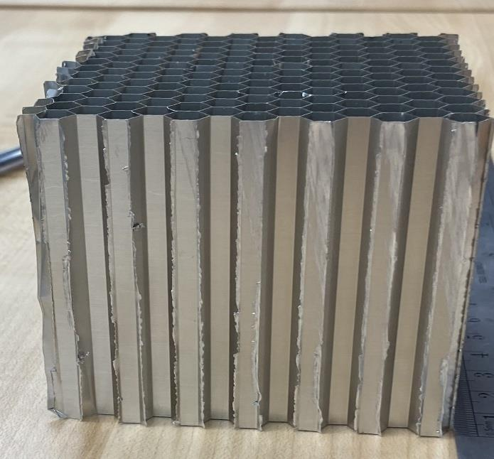
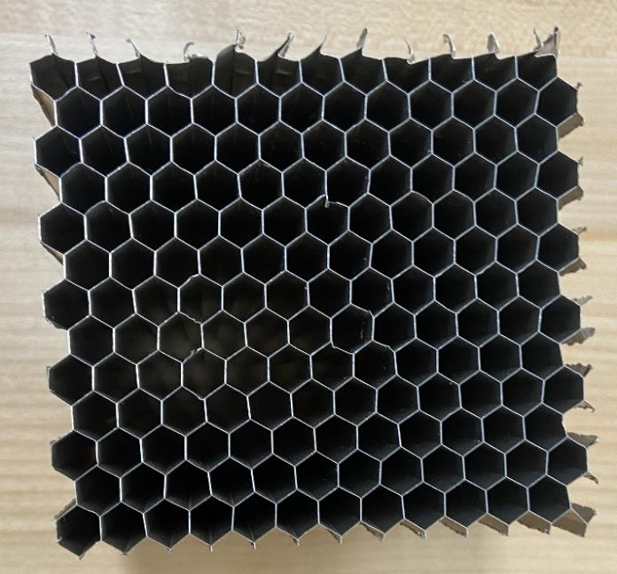
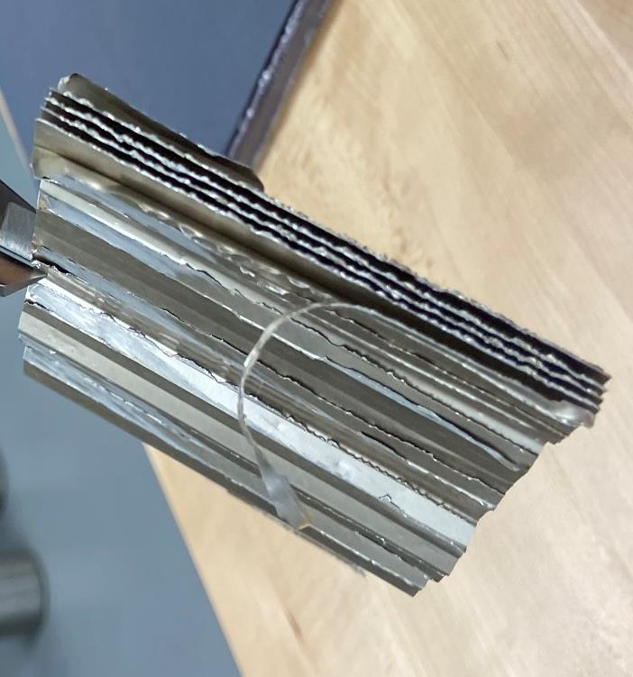
Four teams each measured five nominally identical specimens, recording foil thickness, cell size, dimensions, and mass. The specimen closest to the cross-team mean was selected for compression testing to minimize variability. The Tinius Olsen 150ST applied an axial load at constant displacement rate using the “ERAU Honeycomb Compression” test method, recording force and displacement throughout the crush cycle. Stress was computed by dividing force by the measured cross-sectional area, and strain by dividing displacement by original height. Energy absorbed was calculated as the area under the stress-strain curve, computed analytically by breaking the curve into two geometric regions. Post-test microscopy documented cell wall buckling morphology at multiple magnifications.
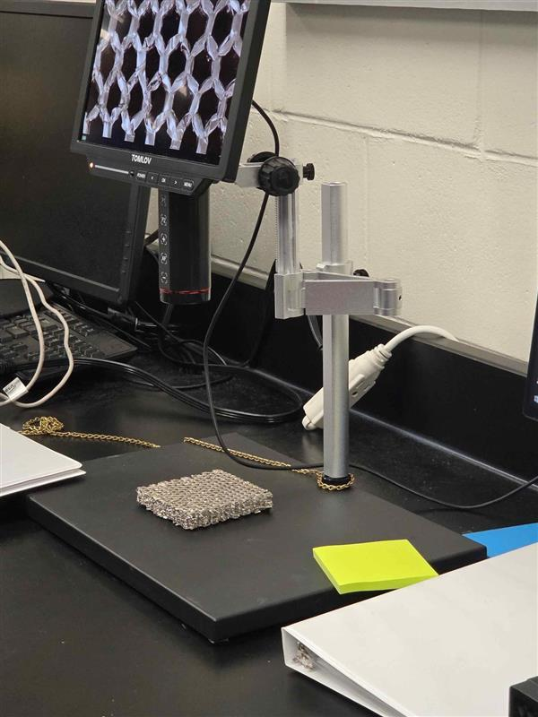
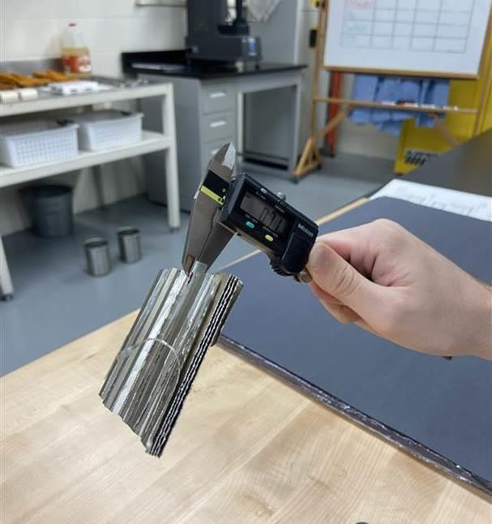
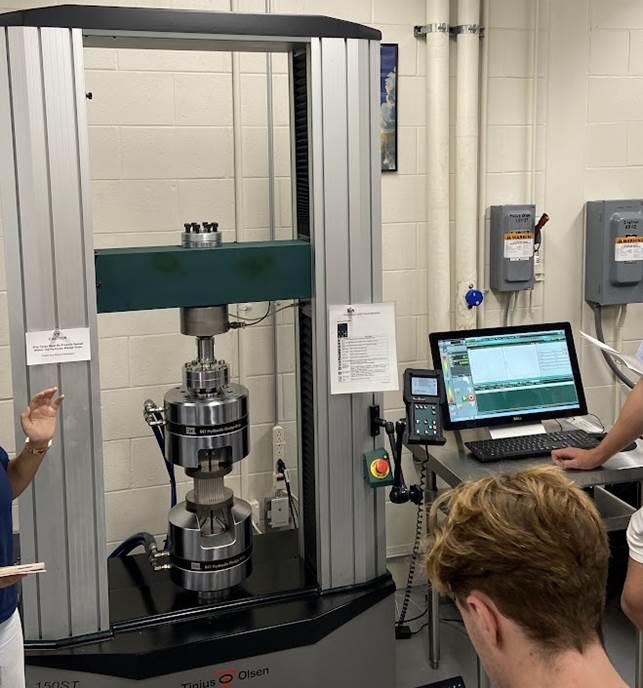
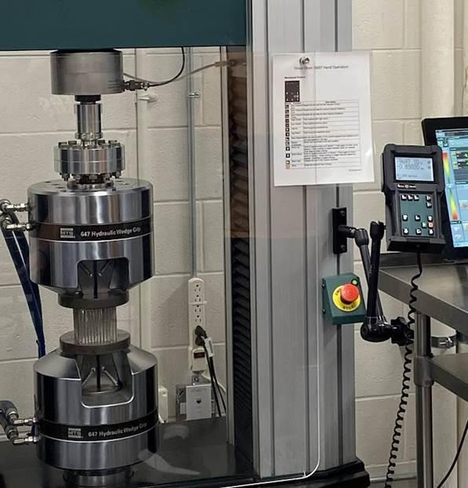
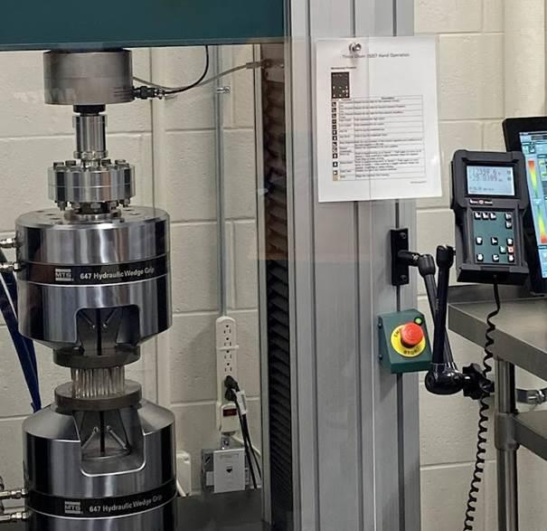
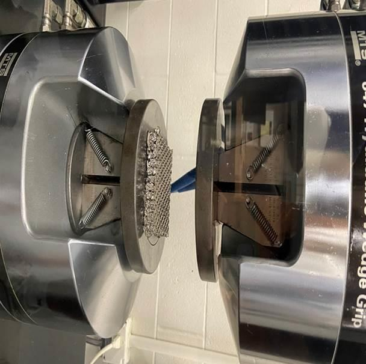
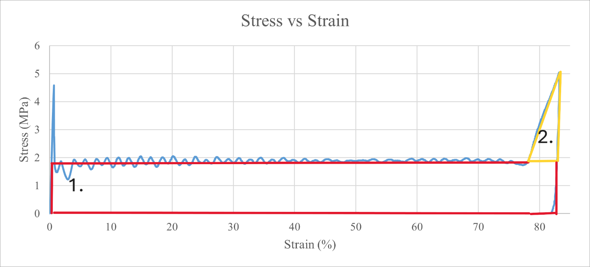
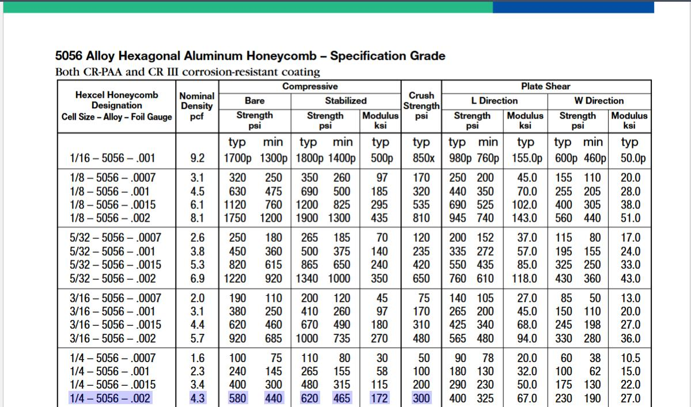
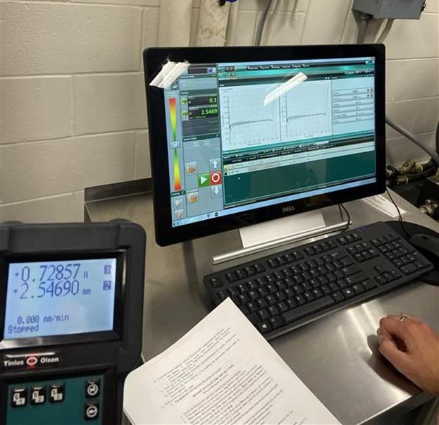
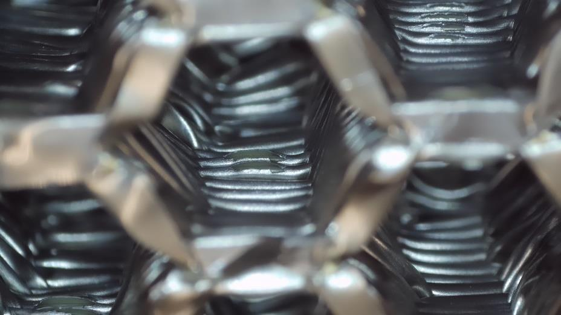
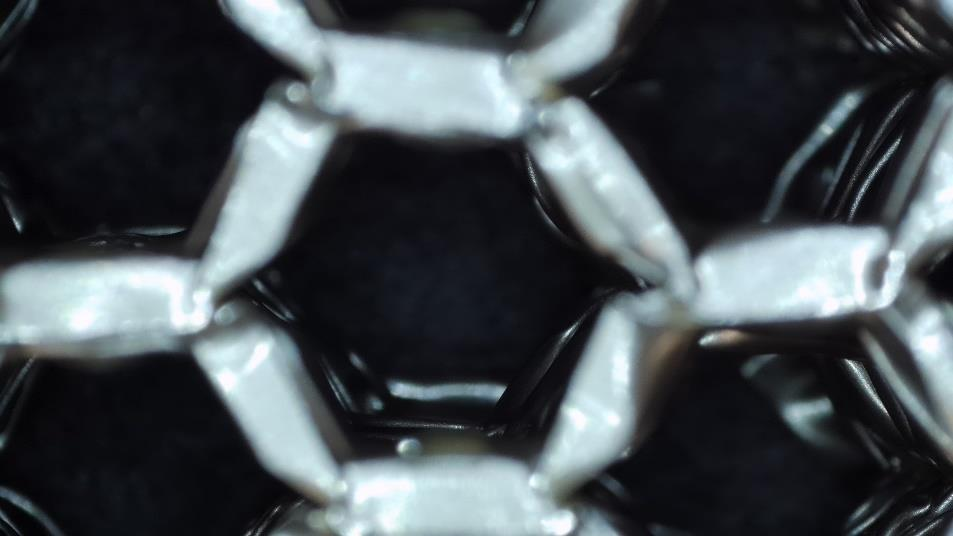
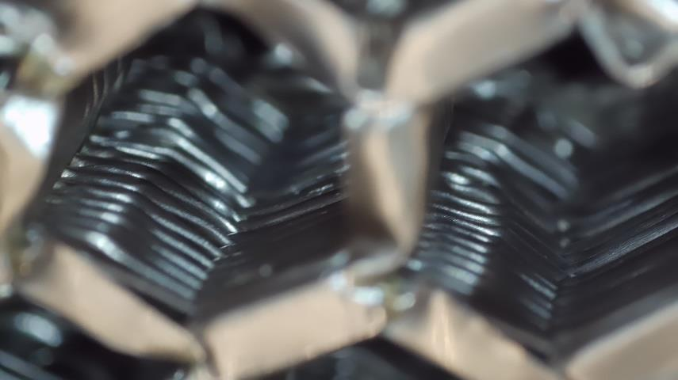
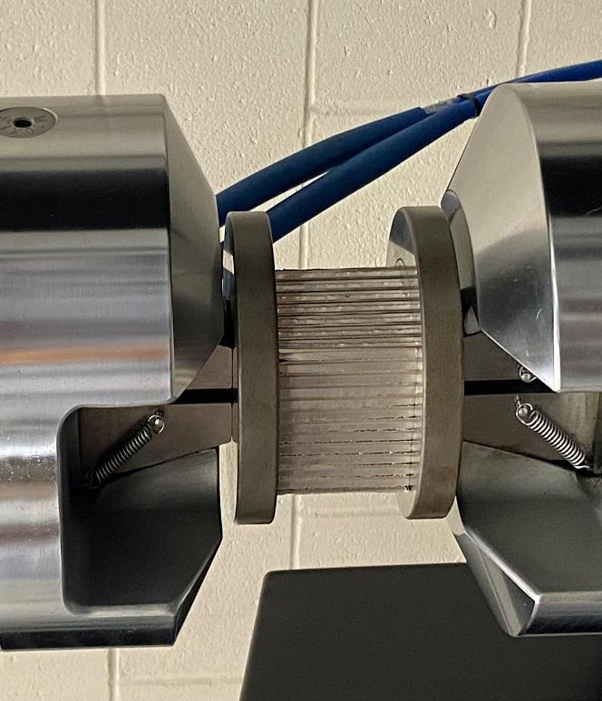
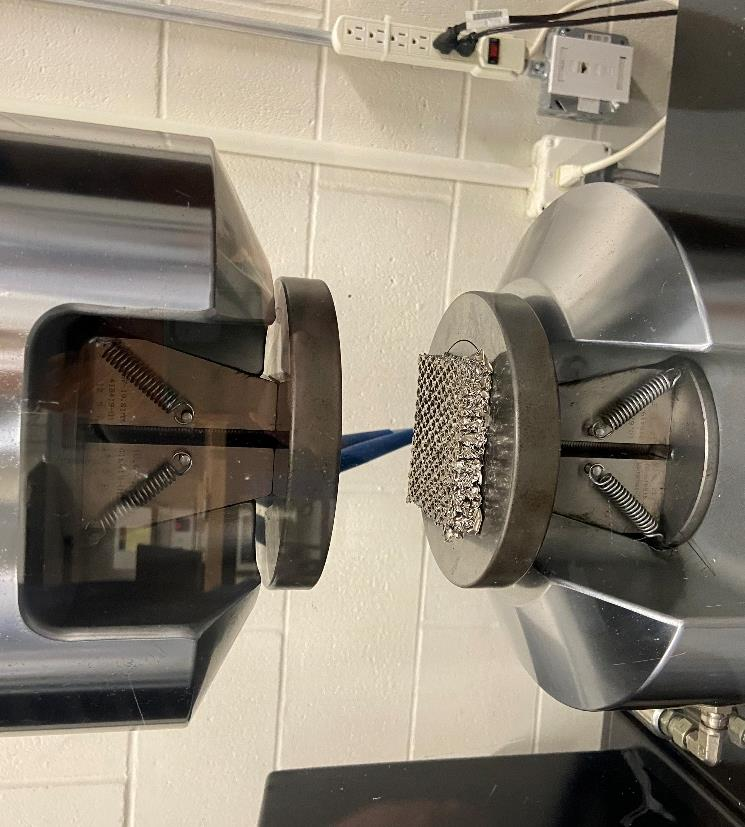
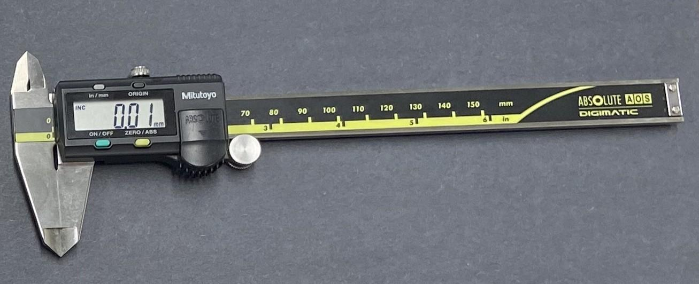
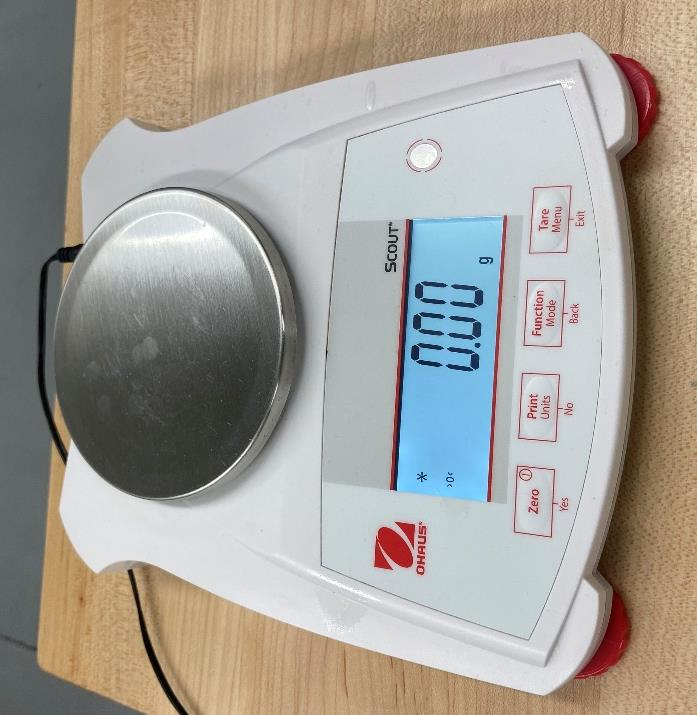